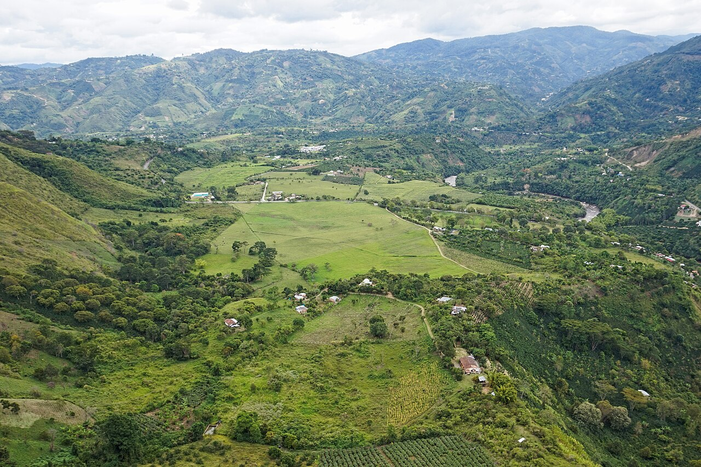
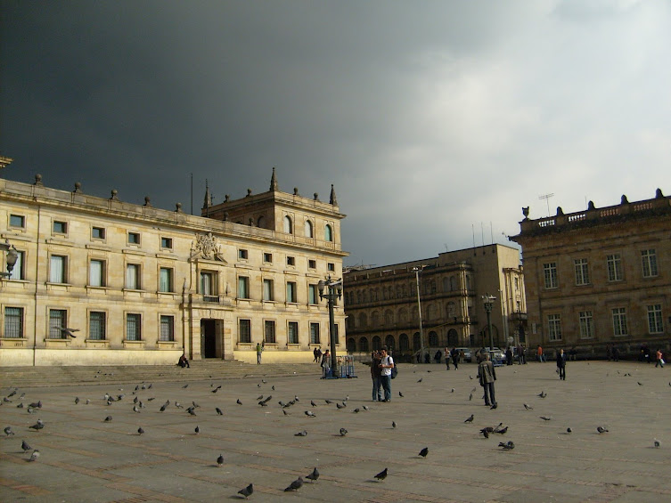
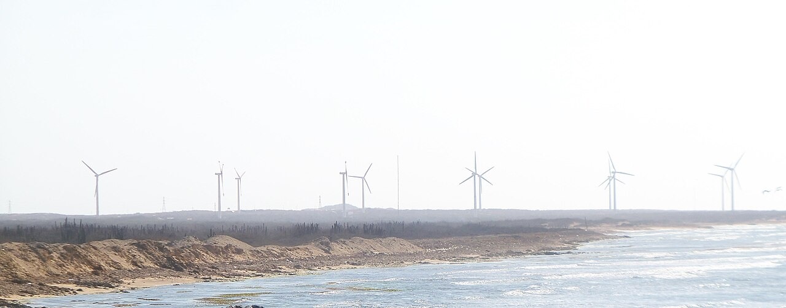
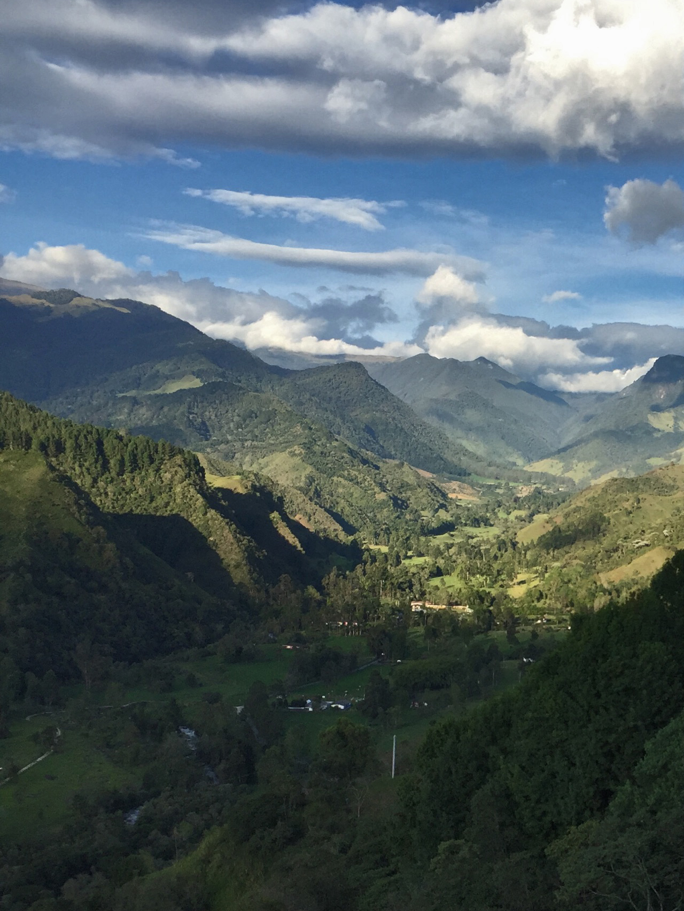

Intermediarios
Externado, el observatorio y CTH conectan niveles. CTH es intermediario de confianza y no es dueño de un data warehouse (WP, documentación Datalab).
Recorrido para Diego Alejandro Díaz Malagón · 30 oct 2026 · Holland House, Bogotá
La colaboración es la lente. El dato es la infraestructura.
White paper v1 · octubre 2026 · texto en español manda
Fuente: WP p1 (subtítulo y encuadre).
WP §1 · Resumen ejecutivo
El Observatorio de la Tierra es el programa donde la casa académica (Universidad Externado) y la custodia del contrato (CTH Foundation) trabajan con la hélice y el círculo. Carapulica lleva el relato de la colaboración. El Datalab es el motor, dentro del observatorio. El dato queda debajo, como infraestructura.
La colaboración se muestra. El motor no la sustituye. Esta nota usa la perspectiva multinivel (capítulo 1) para leer el cruce, sin repetir toda la teoría.
Fuentes: WP p2 §1; CV SEXTA (5 años); conteos estructurales en WP §4, §9, §13.
WP §2 · Capítulo 1 · Perspectiva multinivel
Geels (2002, 2011) distingue nicho, régimen sociotécnico y paisaje. El observatorio no pronostica la vía de un lente: una celda vacía no es un cero.
Externado, el observatorio y CTH conectan niveles. CTH es intermediario de confianza y no es dueño de un data warehouse (WP, documentación Datalab).
Geels y Schot (2007); Markard, Raven y Truffer (2012); Loorbach (2010); Carayannis y Campbell (2009); Smith y Raven (2012).
Fuentes: WP p2 §2, p12 §15.
WP §3 · Notas de origen
La colaboración manda. El dato queda debajo, como infraestructura del cruce.
No entran: segunda ruta de cohortes, segundo instituto de cifras nacionales, ni un nombre tan fino que el Externado deje de formular la pregunta.
Territorio y colaboración: el observatorio lee cruces, no publica un atlas nuevo.
Foto: Bernard Gagnon · CC BY-SA 4.0 · Wikimedia Commons (Huila).

Fuente: WP p3 §3 (notas de origen).
WP §4 · Propósito
Leer cómo la innovación cruza del nicho al régimen, con cuatro lentes pares: Ambiental, Urbana, Ciudadana y Del mercado. Tecnología es el hilo del nicho, no un quinto par.
AMBIENTAL
Paisaje y transición
URBANA
Calidad del aire, ciudad
CIUDADANA
Hélice + círculo
DEL MERCADO
Startups y régimen
«Fuente única» en el Datalab es una definición de fila, calidad y permiso (contrato y YAML de sandbox), no un lago nacional.
Fuente: WP p3 §4 (propósito y límites).
WP §5 · Banda fundadora
Formula la pregunta, pone estudiantes, sostiene la ética de datos y revisa si el dato aguanta una conclusión. Ancla hub REIN Colombia y CEE.
Custodia del contrato y del motor. Intermediario de confianza. No es dueño de un data warehouse.
Marco Externado × CleantechHUB firmado 3 jul 2024; vigencia 5 años desde la última firma. Marco sin erogaciones (detalle financiero en convenio específico, no en este deck).
Fuentes: WP p3 §5; CV (03 jul 2024, SEXTA, QUINTA).
WP §6 · Mapa de actores
Carapulica es el relato de la colaboración (no un almacén). El Datalab es motor, dentro del observatorio.
Carapulica invita al círculo; no anuncia un socio que no existe. El lente Ciudadana hace explícita esta colaboración (consentimiento de datos incluido).
| Paso | Qué aporta el territorio / comunidad | Qué recibe / límite (WP) |
|---|---|---|
| 1 · Invitación al círculo | Un proyecto de su territorio (ejemplo pedido: agrovoltaica) | No se anuncia membresía ni cliente; Carapulica registra el cruce |
| 2 · Contexto normativo | Comunidades energéticas (Colombia: Decreto 2236/2023; CREG 101 072/2025) | Una comunidad energética no es, por esa sola norma, una cooperativa |
| 3 · Protección del nicho | Cooperativas eléctricas (contexto regional citado en WP) y sociedad civil en el círculo | La sociedad civil no es un quinto radio de la hélice |
| 4 · Motor de datos | Metadato de conexión vía Datalab (living lab, vitrina, datathon según caso) | El Datalab no guarda el predio ni el parque; no nombra implementador sin fuente |
| 5 · Precedente verificado | Gobierno Región Metropolitana de Santiago financió 3 sistemas 13 kWp (Fraunhofer; cerró 2018) | PENDIENTE: ninguna alcaldía colombiana está invitada en esta nota |
El círculo conecta lo local con la hélice sin convertir a un gobierno local en «miembro» del observatorio.
Foto: Daforerog · CC BY-SA 3.0 · Wikimedia Commons (Plaza de Bolívar, Bogotá).

Fuentes: WP p3 §6, p4 (círculo, agrovoltaica, normas, Santiago); lente Ciudadana WP p5–6.
WP §7 · Tipos de actor
Esta nota no nombra empresas, clientes ni sedes concretas. Los tipos orientan cómo colaborar.
| Tipo | Rol en la colaboración | Límite |
|---|---|---|
| Gobierno | Porta regla e información oficial | No es miembro por portar dato |
| Cooperación internacional | Presión de paisaje; puede proteger el nicho | No es el paisaje (Ambiental sí) |
| Startups / innovación | Nicho si la oferta necesita protección | Cohorte solo vía REIN; sin nombres |
| Sector privado | Régimen; adoptante posible | Sin lista de empresas ni clientes |
| Círculo (local, cooperativas, sociedad civil) | Invitación explícita vía Carapulica | Sociedad civil fuera de la hélice |
Fuente: WP p4 §7.
WP §8 · Lentes y palancas
Cinco palancas (preguntas): cooperación internacional, innovación, investigación, entrada al mercado por emprendimiento, problema del corporativo.
Transición energética, biodiversidad, economía circular (ENEC). Fechas EUDR citadas: 30 dic 2026 y 30 jun 2027 (micro/pequeñas). No monta otra vía de diligencia debida.
Calidad del aire; caso documentado en sandbox con startups (lente Urbana). No monta red de estaciones; adoptante sin evidencia en fuente fechada.
Hélice + círculo (gobiernos locales, cooperativas, sociedad civil) y consentimiento para publicar un dato. Aquí se lee la entrada de municipios y comunidades.
Startups y corporativos en cruce con Ambiental; cohorte vía REIN. Incumbente solo como tipo con informe público citado.
Cifra citada (no resultado del observatorio): ProColombia y GGGI acompañaron 145 emprendimientos y empresas rurales (Ruta Exportadora Bioeconomía Rural, 7 ene 2026).
Fuentes: WP p4–6 §8; ProColombia 2026 (WP p6).
WP §9 · El Datalab
Cuatro entornos (ordena la tabla por duración). Servidores OVH en la UE; diseño alineado con Reg. (UE) 2022/868 y Ley 1581/2012 (no certificación).
| # | Entorno ↕ | Duración (días, orden) ↕ | Nota WP |
|---|---|---|---|
| 1 | Vitrina pública anonimizada | Continua | Custodio + startup; variante corporativa ligera |
| 2 | Living lab cerrado (3 partes) | 90–180 | Startup + implementador (sin nombre en nota) |
| 3 | Producto de cliente | Solo lectura | Copia de horas validadas |
| 4 | Datathon | 28–42 (4–6 sem) | No es living lab ni cohorte REIN |
Transición energética en territorio: el lente Ambiental cita atlas oficiales, no los reemplaza.
Foto: Taggen · CC BY-SA 4.0 · Wikimedia Commons (Jepírachi, Guajira).

Fuente: WP p6–7 §9.
WP §10 · El papel
«Sin evidencia» ≠ cero.
Fuentes: WP p7–8 §10; fechas EUDR WP p5 y EUR-Lex feb 2026.
WP §11 · Earth Data Week
Mes de referencia: marzo. Año: PENDIENTE.
1 · Entornos
Recorre los cuatro entornos con datos publicables.
2 · Matriz
Cuatro lentes + hilo; un caso por lente.
3 · Círculo
Invita al círculo sin anunciar socios inexistentes.
4 · EUDR
Remite EUDR a guías ya publicadas (FIT for FAIR).
5 · Datathon
Cierra con un datathon.
Earth Data Week muestra colaboración y motor; no lanza un instituto nuevo.
Foto: Angela Calle y Daniel Di Palma · CC BY-SA 4.0 · Valle del Cocora.

Fuente: WP p8 §11.
WP §12 · REIN
Esta nota no abre otra ruta al lado de REIN. Earth Data Week no es final de ClimateLaunchpad.
Hay dos textos públicos (PVBLIC vs CleantechHUB) con énfasis distintos; esta nota no elige entre ellos.
Hub en Externado mencionado desde 2019 (página PVBLIC, citada en WP).
Fuente: WP p8 §12.
WP §13 · Hoja de ruta
Responsables: CEE (Marlene Díaz), Desarrollo e Innovación (Diego Díaz Malagón), CleantechHUB (Gideon Blaauw). Plazos y planta: PENDIENTE (v2).
Fuente: WP p8–10 §13.
WP §14 · Perfiles

Directora, CEE · anfitriona hub REIN Colombia en el Externado

Coordinador de Desarrollo e Innovación, Dirección de Desarrollo Institucional

Regional Lead, CleantechHUB
Fuentes: WP p12–13 §14; URLs de foto WP p13.
Reunión 30 oct 2026 · Cierre
Inspire. Act. Transform.
Agendar conversaciónFuentes: MB (agenda 30 oct); WP límites §4; EM eje colaboración-dato.